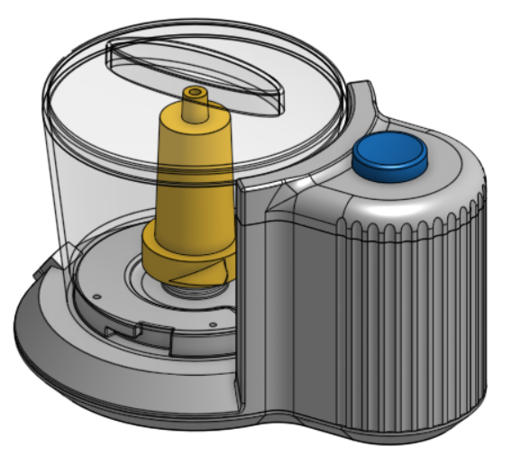
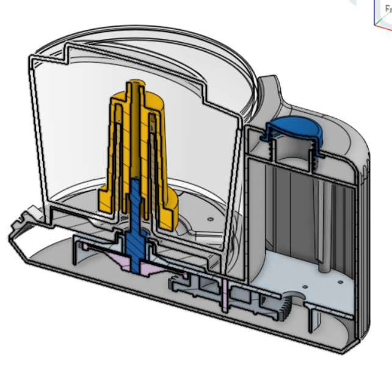
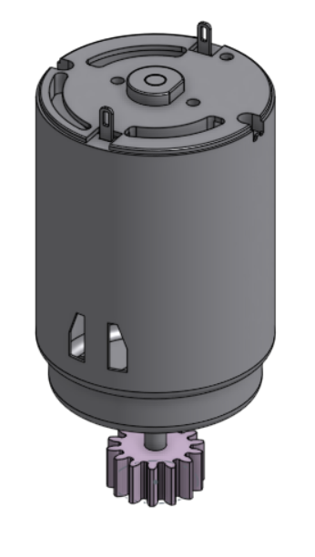
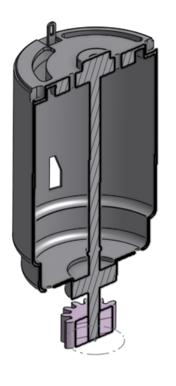
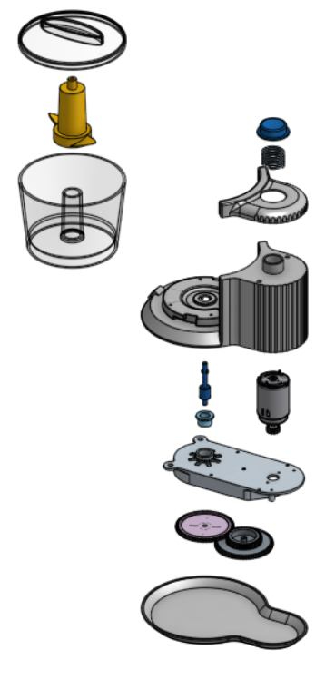
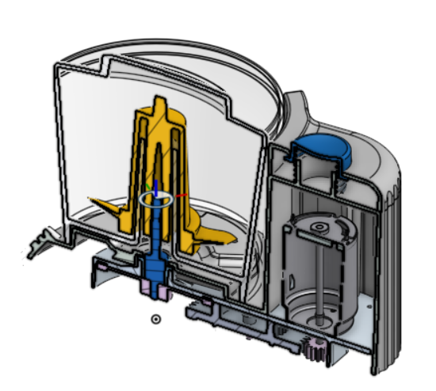
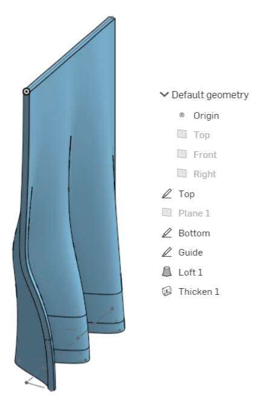

Ch9--Advanced Geometry & Design forPlastics
Ch10-Design for Manufacturing: CNCMachining
Ch11-Advanced Geometry Techniques & Product Data Management
Ch12-Advanced Tools & Design for Assembly
這幾周的目標"果汁機"
本體:
馬達:爆炸圖:
組合圖:作業!!:
學習要點-分別是:
Ch9-
開始果汁機的計畫
高階的零件建模
自上而下的高階設計
草圖的應用
使用表面
分裂部分
使用變量/表達式
編輯外觀/透明度
果汁機 - 初步設計
Ch10-
使用孔工具
對正齒輪使用FeatureScript
導入Solidworks Pack / Go文件
直接編輯現有零件（修改圓角，刪除/移動/替換）
介紹Onshape App Store
果汁機 - 傳動部件完成
Ch11-
高階的零件建模
Lofting(?
導入和操作草圖圖片
用樣條曲線繪製草圖
壓花標誌
繪製螺旋線以形成彈簧
使用分支/比較/合併功能
果汁機設計完成
Ch12-
使用剖面視圖尋找干涉
應用齒輪關係
應用材料並使用“質量屬性”
使用App Store中的爆炸視圖
從Onshape Mobile進行編輯
導出Solidworks文件
果汁機 - 組裝，文檔和總結